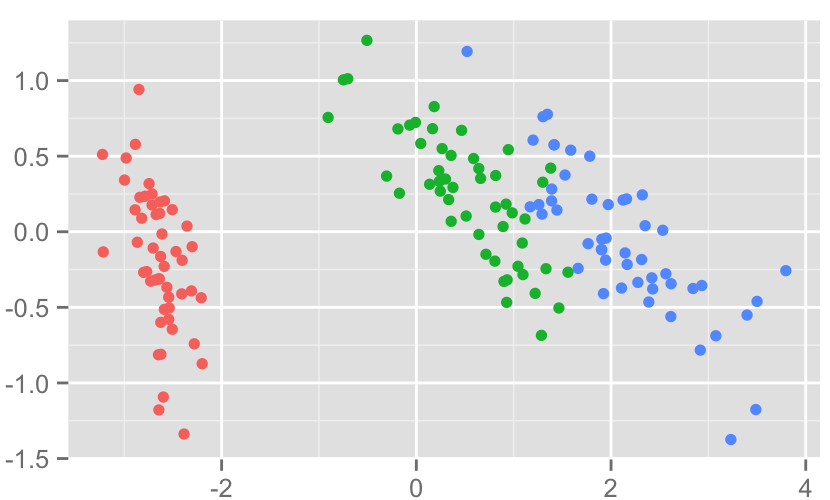
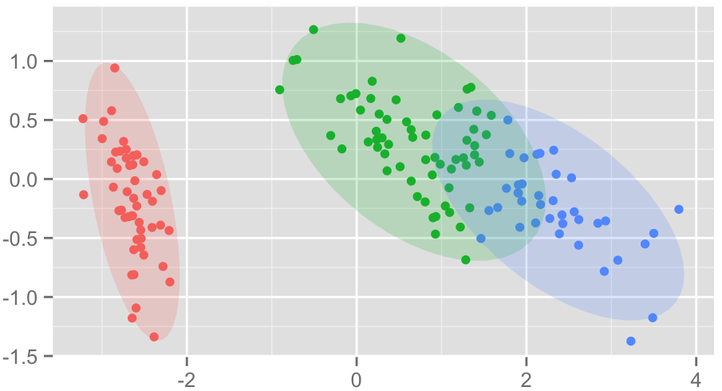

What is KNN?
KNN is a non-parametric supervised classifier. KNN can also be used for metric learning and density estimation. KNN is simple, and does not have a true training phase, which sets it apart from most other classifiers. KNN is extremely dependent on well chosen features. Despite its simplicity, KNN is an extremely common and effective classifier. We will cover theory, especially choice of hyper-parameters, implementation, and extensions into metric learning.

